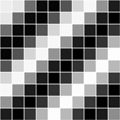

Processing.py Tutorials. A collection of step-by-step lessons introducing Processing (with Python).
Many of these tutorials were directly translated into Python from their Java counterparts by the Processing.py documentation team and are accordingly credited to their original authors. Please report any mistakes or inaccuracies in the Processing.py documentation GitHub.
Welcome to Processing! This tutorial covers the basics of writing Python code. Level: Beginner |
A more detailed introduction to the different features of Processing. Level: Beginner |

Drawing simple shapes and using the coordinate system. Level: Beginner |
Introduction to Interactivity with the Mouse and Keyboard Level: Beginner |
||

How to store data in a matrix using a two-dimensional list. Level: Intermediate |
How to load and display images as well as access their pixels. Level: Intermediate |
Learn how to use the string class and display text onscreen. Level: Intermediate |
Learn how to translate, rotate and scale shapes using 2D transformations. Level: Intermediate |
Developing advanced graphics applications in Processing using P3D (OpenGL) mode. Level: Advanced |
How do you analyze a problem and break it down into steps that the computer can do? Level: Advanced |
Break free from the Processing IDE and develop Processing.py sketches on the command line Level: Advanced |
Learn how Processing.py brings together Python, Jython and Java Level: Advanced |